CONSISTENCIA
Se trata de mantener la coherencia visual y funcional.
Esto es, seguir la guía de estilo, el look & feel, y cuidar con todo aquello que el usuario interactúa.
Es importante testear todos los cambios que se hace.
Los cambios deben tener un significado.
Se trata de mantener la coherencia visual y funcional.
Esto es, seguir la guía de estilo, el look & feel, y cuidar con todo aquello que el usuario interactúa.
Es importante testear todos los cambios que se hace.
Los cambios deben tener un significado.

Se debe tener muy en cuentas los objetos: tamaño, formas, peso.

PREVISIBILIDAD
Se trata de generar tranquilidad al usuario al sentir que tiene el control.

FEEDBACK
El sistema debe informar al usuario sobre qué acción se ha realizado y qué resultado se ha obtenido. Es importante hacer visible el resultado de la acción o el estado del sistema, cuando éstos no lo son de forma natural.
LEARNABILITY
Las interacciones deben ser fáciles de aprender y de recordar. Una interfaz es fácil de aprender cuando las señales de interacción que vemos imitan a las personas con las que estamos familiarizados. Aprendemos comportamientos de nuestras experiencias en la web, dispositivos y lugares y objetos del mundo real.

SOBRE MÍ
Donald A. Norman es profesor emérito de ciencia cognitiva en la University of California, San Diego y profesor de Ciencias de la Computación en la Northwestern University, pero hoy en día trabaja principalmente con la ciencia cognitiva en el dominio de la ingeniería de la usabilidad. También enseña en Stanford University.Los primeros libros de Norman tratan principalmente de la usabilidad o la psicología cognitiva, pero Things That Make Us Smart (Cosas que nos hacen Inteligentes) también realiza una cierta crítica de la naturaleza de nuestra sociedad, en particular a Norman no le gusta la falta de contenido de la televisión y las malas exposiciones en los museos. Últimamente tiende a centrarse en lo positivo. Le gustan los productos que disfrutamos usándolos, una característica que atribuye a poner juntas las emociones y el diseño, o mente y corazón. Ha explicado este concepto con detalle en su libro Emotional Design (Diseño Emocional).
Es promotor del concepto de information appliances (aparatos de la información), sobre los que ha escrito en su libro The Invisible Computer (La Computadora Invisible).
Ejemplo@gmail.com
Enviar